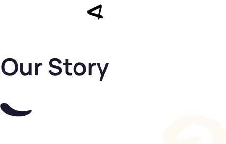

Back in May 2022, we discovered a gap that needed to be filled: it was
difficult for newbies in tech to land internships and entry-level jobs. To
address this, we launched a program that hosted over 40 participants
across product, design, and software engineering.
The goal of the program was to allow collaborators to build a product
while picking up soft skills and gaining experience working in a team.
Though we've been quiet for a while, we are back with a renewed focus on solving this problem. Terntribe is creating a platform that connects newbies to their first jod through contributions to open-source projects. these projects we be at the heart of innovation in Africa. In retrospect, we are contributing our quota to buiding the talent pipeline in Africa, starting from the grassroots. Startup can quickly vet contributors base on their commitment to open-source projects at Terntrib, helping them on board the right talent. On another front, training hubs can leverage Terntribe's robust pipeline to expose their student to valuable opportunities.
We envision a space where people contribute to open-source projects, ultimately reflecting their potential as hires for startups and large organizations. A minimum of 3 months’ commitment and contributions to these projects will help position Africa’s tech ecosystem as a hub of innovation and talent development.
We are ready to take this initiative to the next level, with plans to massively contribute to open source in Africa while building the continent’s next talent pipeline from the ground up. Watch out for our growing influence in the tech ecosystem.
We are keen on powering a community of innovators contributing to open source projects across the continent. Empowering Africa’s tech talent to thrive in a global digital landscape by fostering innovation, collaboration, and inclusivity through open-source initiatives.
To connect and support Africa’s diverse tech community by providing access to open-source projects that enhance skills, promote collaboration, and create meaningful opportunities for career growth, ultimately driving technological advancement across the continent.
We’re using innovation to make a difference, aligning our work with crucial SDG goals. These selected goals reflect the initiative’s
commitment to fostering education, employment, and inclusivity in the tech sector.
Join a tribe of forward-thinkers in the tech space, working together to
create inclusive solutions and drive real-world impact.
Connecting Africa's tech talent to opportunities.
One open-souce priject at a time